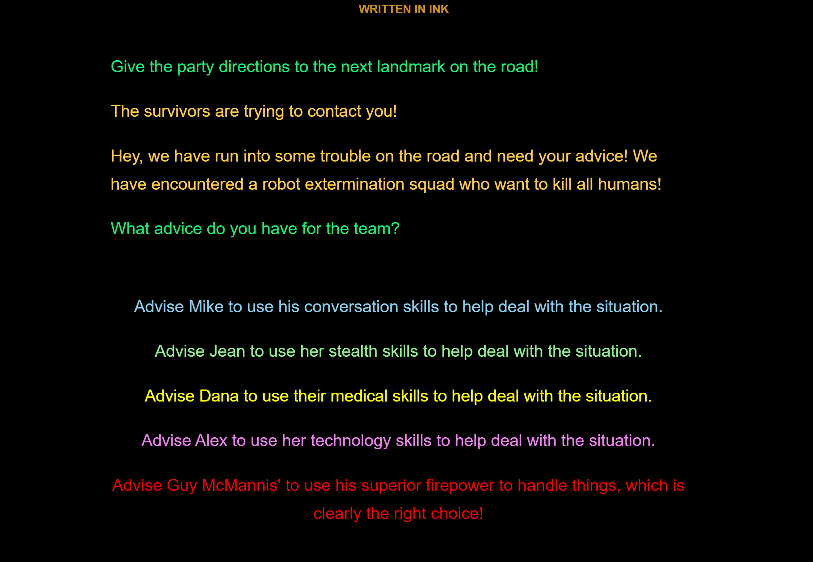

Life in the Megapocalypse
Kenton Taylor Howard

Engaging the value of interactive fiction games for addressing queer representation and discourse within the classroom, “Life in the Megapocalypse” is a playable, web-based game built in Ink. Along with its framing introduction, which draws on lessons from existing limitations in queer play in games as well as frameworks for digital humanities critical making as pedagogical practice, the project demonstrates an activist approach to educational design, suggesting that scholars seeking to benefit from digital playful pedagogy must build systems alongside and with their students, creating moddable shared spaces for creative work. Digital content creation is a skill that can be useful to almost any scholar of games who is interested in representation, and foundational systems like “Life in the Megapocalypse” that are designed to be easy to learn, easy to modify, and that have a clear focus on representation can provide a framework that such scholars can use to begin exploring their potential.
The notion that representation of queerness and marginalized forms of identity in visual media is important is relatively uncontroversial at this point: numerous mainstream media franchises, such as the American Horror Story television series, have included queer characters in prominent narrative arcs in the series, resulting in increased visibility for queerness in popular culture. Games are no different in this respect, though they perhaps lag behind other forms of visual media such as television of film in that there tends to be less inclusion of queer characters in mainstream, popular games. Calls for inclusion of marginalized identities in mainstream games have also been met with resistance, or in some cases, an outright hostility that is not often seen when other forms of media portray queer characters. Reactions to characters like Tracer in Overwatch (Blizzard Entertainment, 2016), whose identity as a lesbian was revealed in a comic, are an example of this resistance: one fan meme mocked Blizzard by calling them “the JK Rowling of Games” (Tamburro, 2019) in reference to the Harry Potter author revealing the queer sexuality identity of a major character after the book series ended.
As mainstream games handle queer representation poorly, rightly drawing attention for tokenism and reliance on narrative tropes, indie game making informed by principles from serious game design and interactive fiction offers more potential for meaningful engagement. Scholars have worked to document these less-known exemplars of queer play, including projects such as the LGBTQ Video Game Archive, the Queer Game Studies (Shaw and Ruberg, 2017) collection and Video Games Have Always Been Queer (Ruberg, 2019) This work draws on an adage from Mark Rosewater (2016), a long-time designer for Magic: The Gathering, who claimed that “restrictions breed creativity” in a GDC talk reflecting on 25 years of working on the game.
About the Author
Kenton Taylor Howard
Kenton Taylor Howard is a full-time instructor in the Games and Interactive Media program at the University of Central Florida, where he teaches game programming and design. He has published articles in the Transactions of the Digital Games Research Association journal and his work has appeared in conference proceedings at conferences such as the Association of Computing Machinery Conference on Hypertext and Media and the International Conference on Interactive Digital Storytelling.